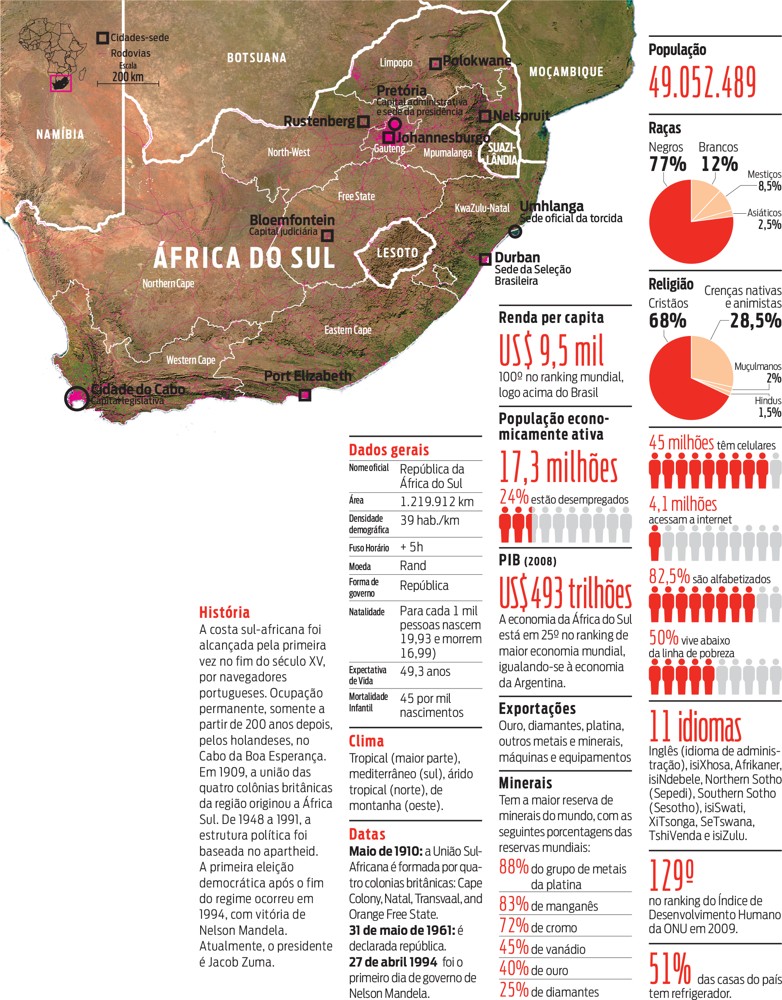
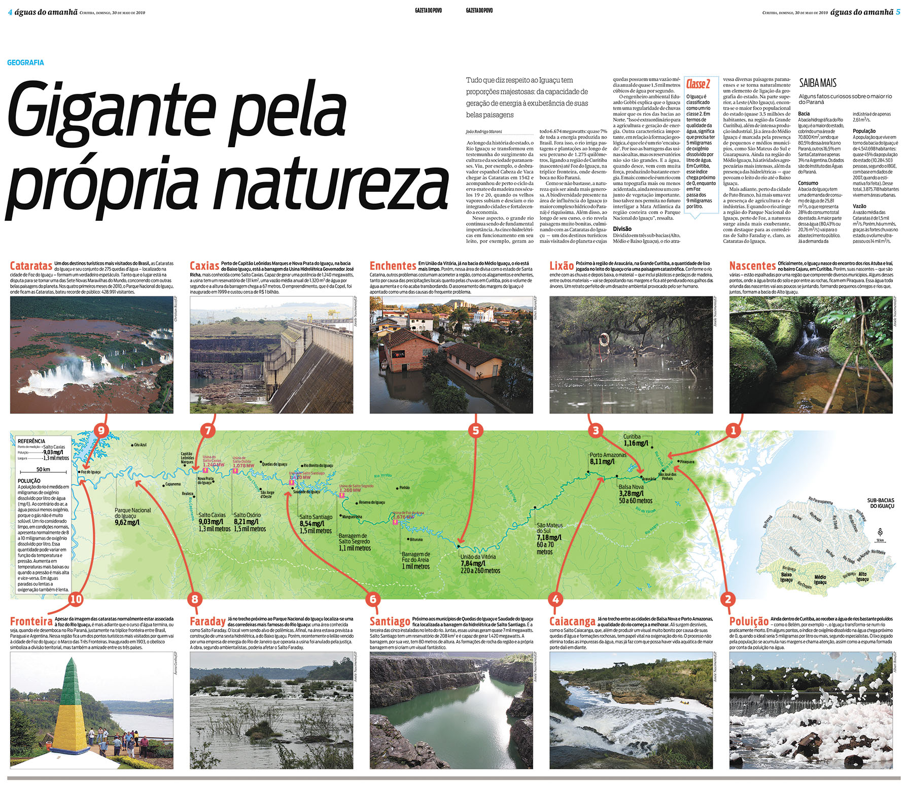
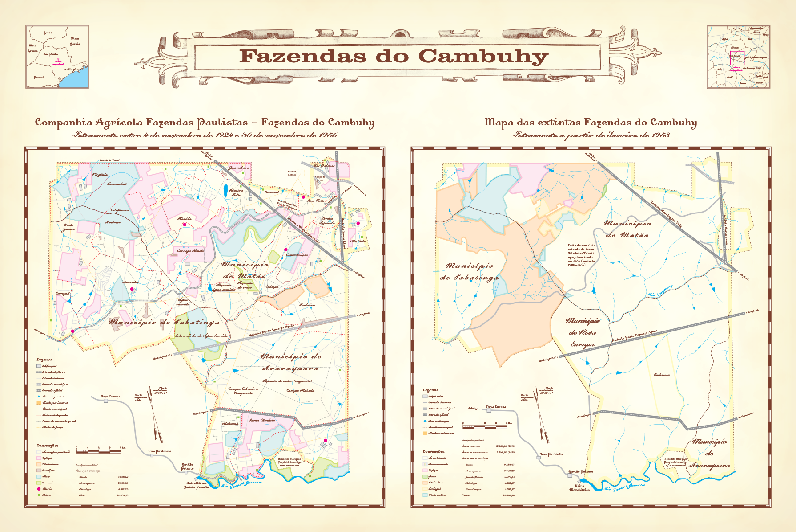

Mapas
Desde criança sou fascinado pela densidade de informação que um mapa permite. Trabalhar com infografia me permitiu desenvolver várias técnicas para fazer mapas, assim como a edição jornalística me forneceu recursos para facilitar a navegação de quem está lendo o mapa.
África do Sul - Copa do Mundo 2010
O primeiro exemplo é um infográfico sobre a África do Sul, por ocasião da Copa do Mundo, para o jornal Gazeta do Povo. O mapa, elaborado com recursos abertos como imagens de satélite e arquivos shapefiles, mostra o relevo do país, suas cidades principais, e inclusive as estradas, com cores e fios cuidadosamente escolhidos para aproveitar as vantagens e superar as limitações do meio impresso. Acompanham pequenos infográficos com vários dados do país.

Rio Iguaçu
Outro exemplo é o infográfico sobre o Rio Iguaçu, para o caderno Águas do amanhã. Ocupando a largura inteira de uma página dupla – aproximadamente 60 centímetros –, mostra vários pontos de interesse, ressaltados com textos e fotografias. O mapa foi feito com shapefiles do IBGE, desenhados com QGIS e finalizados no Adobe Illustrator e Macromedia Freehand (sim!). Levei o meio impresso ao limite, com detalhes muito cuidados.

Fazendas do Cambuhy
Este trabalho tinha um objetivo um pouco diferente: era um presente de aniversário para um pesquisador que escreveu um livro sobre as Fazendas do Cambuhy, em São Paulo. Minha base foram mapas da região, que vetorizei manualmente. Para dar o tom histórico, optei por usar cliparts antigos e fontes tipográficas que remetessem a mapas antigos – Dalliance, da Emigré Fonts. Fiquei satisfeito não pela qualidade, mas pelo que o presente significou para o homenageado.
